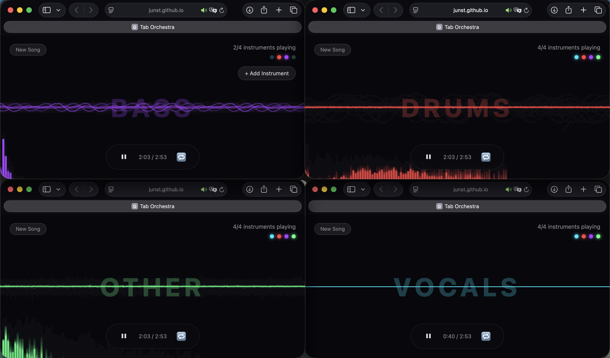

Hello, I am a Ph.D student in Artificial Intelligence at Yonsei University, advised by Prof. Seon Joo Kim, and currently a Research Intern at KRAFTON. I am also collaborating with Prof. Hao-Wen Dong at the University of Michigan on multi-pitch estimation research.
My research focuses on music audio understanding and generation, spanning music source separation, multi-pitch estimation, and text-to-audio synthesis. I am particularly interested in how deep learning models can decompose, analyze, and reconstruct complex musical signals. My recent work includes confidence-guided test-time adaptation for source separation, attention-based alignment for controllable music generation, and building large-scale benchmarks for music question answering.
I am currently supported by a Ph.D. Research Fellowship from the National Research Foundation of Korea, working on Multi-Pitch Estimation Models Based on Synthetic Polyphonic Vocal Data. I also lead MAAP (Music AI Assemble People), a growing community of about 25 members and professionals exploring the frontiers of music AI. In Fall 2026, I will be joining the University of Michigan as a visiting student.
🔥 News
- May 2026 : 🏆 Won 1st place in the Performance Track AND #1 overall in MOS evaluation at the ICME 2026 ATTM Grand Challenge!
- May 2026 : 1 paper is accepted to the ICME 2026 ATTM Grand Challenge! 🎵
- Apr 2026 : MCJudgeBench is accepted to ACL 2026 Workshop (GEM)!
- Apr 2026 : Jamendo-MT-QA is accepted to ACL 2026 Findings!
- Mar 2026 : 1 paper is accepted to CVPR 2026 Workshop (P13N)!
- Feb 2026 : I'm going to University of Michigan as a Visiting Graduate Student 👨🎓
- Feb 2026 : 1 paper is accepted to LREC 2026!
2025 News
- Sep 2025 : Our AIBA paper is accepted to NeurIPS 2025 Workshop (AI for Music) 🎶
- Sep 2025 : Awarded Brian Impact Foundation (Kakao, USD 1.5K Per paper)
- Aug 2025 : Selected for NRF Ph.D. Research Fellowship (RS-2025-25422688, USD 20K)
- Jul 2025 : I will be working at KRAFTON AI in August!
- May 2025 : I'm going to USC summer session in July!
2024 News
- Oct 2024 : Our model has been downloaded over 33,000 times and has ranked 7th among trending models worldwide!
- Sep 2024 : Illustrious technical report is submitted in arXiv and HuggingFace!
- Aug 2024 : 1st Anniversary at my first company, Onoma AI 🎉
- May 2024 : One paper is accepted to IIAI-AAI 2024!
- Jan 2024 : One paper is accepted to CVPR!
🎓 Education
University of Southern California July 2025 - Aug 2025
Summer Session, Artificial Intelligence
Yonsei University, Seoul, Republic of Korea Mar 2023 - Present
Ph.D. Student, Department of Artificial Intelligence
Soongsil University, Seoul, Republic of Korea Mar 2017 - Feb 2023
B.S., Major in Media
✏️ Publications
Conference & Workshop Papers
Instrumental Text-to-Music Generation with Auxiliary Conditioning Branches: A Submission to the ICME 2026 ATTM Grand Challenge
Junyoung Koh
ICME 2026 Audio-Text-to-Music (ATTM) Grand Challenge — 🏆 1st Place, Performance Track · 🏆 #1 Overall MOS
Jamendo-MT-QA: A Benchmark for Multi-Track Comparative Music Question Answering
Junyoung Koh, Jaeyun Lee, Soo Yong Kim, GYU HYEONG CHOI, Jung In Koh, Jordan Phillips, Yeonjin Lee, and Min Song
ACL 2026 Findings [arXiv] [PDF] [Project Page] [HuggingFace]
Automatic Inter-document Multi-hop Scientific QA Generation
Seungmin Lee, Dongha Kim, Yuni Jeon, Junyoung Koh, and Min Song
LREC 2026 [arXiv] [PDF]
MCJudgeBench: A Benchmark for Constraint-Level Judge Evaluation in Multi-Constraint Instruction Following
Jaeyun Lee, Junyoung Koh, Zeynel Tok, Hunar Batra, and Ronald Clark
ACL 2026 Workshop on Generation, Evaluation, and Metrics (GEM) [arXiv] [PDF]
Let Triggers Control : Frequency-aware Dropout for Effective Token Control
Junyoung Koh, Hoyeon Moon, Dongha Kim, Seungmin Lee, Sanghyun Park, and Min Song
CVPR 2026 Workshop P13N: Personalization in Generative AI [arXiv] [PDF]
AIBA: Attention-based Instrument Band Alignment for Text-to-Audio Diffusion
Junyoung Koh, Sooyong Kim, Gyuhyeong Choi, and Yongwon Choi
NeurIPS 2025 Workshop on AI for Music: Where Creativity Meets Computation [arXiv] [PDF]
Improving Text Generation on Images with Synthetic Captions
Jun Young Koh*, Sang Hyun Park*, and Joy Song*
IIAI AAI 2024 7th International Conference on Interaction Design and Digital Creation / Computing [arXiv] [PDF]
CAT : Contrastive Adapter Training for Personalized Image Generation
Jaewan Park*, Sang Hyun Park*, Jun Young Koh*, Junha Lee*, and Min Song
CVPR 2024 Workshop Generative Models for Computer Vision [arXiv] [PDF]
Proposal of 3D Camera-Based Digital Coordinate Recognition Technology
Junyoung Koh, and Kanghee Lee
Proceedings of the Korean Society of Computer Information Conference 2022 [PDF]
Preprints & Under Review
Closing the STFT-CQT Gap: Simple Multi-Scale Features for Vocal Multi-Pitch Estimation
Junyoung Koh, and Hao-Wen Dong
Under Review
MusicCritic: Test-Time Scaling for Music Generation with Feature-Based and Audio-Native LLM Critics
Junyoung Koh, Jungwoo Kim, Sunghyeon Kim, Youngjin Na, Joonyong Park, Gyuhyeong Choi, and Soo Yong Kim
Under Review
KoSCoPe: Hierarchical Safety Curriculum with Reasoning Internalization for Korean Small Language Models
Soo Yong Kim, Junyoung Koh, and Seunghyeok Hong
Under Review
Jamendo-QA: A Large-Scale Music Question Answering Dataset
Junyoung Koh, Sooyong Kim, Yongwon Choi, and Gyuhyeong Choi
[arXiv] [PDF] [HuggingFace]
Technical Reports
Illustrious : an Open Advanced Illustration Model
Sang Hyun Park*, Jun Young Koh*, Junha Lee, Joy Song, Dongha Kim, Hoyeon Moon, Hyunju Lee, and Min Song
Technical Report [arXiv] [PDF] [HuggingFace] [CivitAI]
* Equal Contribution
📚 Academic Services
Conference Reviewer
ISMIR / AAAI / NeurIPS Reviewer Aug 2025 - Present
Leader
Modulabs MAAP(Music AI Assemble People) Leader May 2025 - Present
Journal Reviewer
IEEE Access (SCI) Reviewer Aug 2023 - Present
IT Volunteer Service
World Friends Korea Paraguay IT Volunteer Aug 2018 - Sep 2018
🏢 Work Experience
Krafton Aug 2025 - Current 
AI Researcher Internship
Onoma AI Aug 2023 - Feb 2025
AI Team Leader & AI Researcher
🏆 Honors & Awards
ICME 2026 ATTM Grand Challenge — 1st Place, Performance Track & #1 Overall MOS 2026
CES 2025 Innovation Award - AI category 2025
CES 2024 Innovation Award - AI category 2024
💰 Funding
National Research Foundation of Korea (Ministry of Science and ICT)
Ph.D. Research Fellowship (Project: Multi-Pitch Estimation Model Based on Synthetic Polyphonic Vocal Data)
Grant No. RS-2025-25422688 · USD 20K (KRW 25M) for 1 year (Sep 2025 – Aug 2026)
Brian Impact Foundation (Kakao)
Publication support program, providing research funding of USD 1.5K (KRW 2M) per accepted paper (2025 – Present)
Project

Tab Orchestra — Multi-Tab Music Decomposition Art
Each browser tab plays one instrument stem. Open 4 tabs to hear the full song. AI-powered stem separation via Demucs.
[Live Demo] [Code]
ChromaRelief — 3D Tile Media Art
Transform videos into 10-color palette tile relief sculptures rendered in real-time 3D.
[Live Demo] [Code]
Development of an AI Media Art Therapy Platform incorporating Color, Play, and Music Therapies
Junyoung Koh, Dain Park, Junghun Ha, Kanghee Lee
[code] [Project Site]